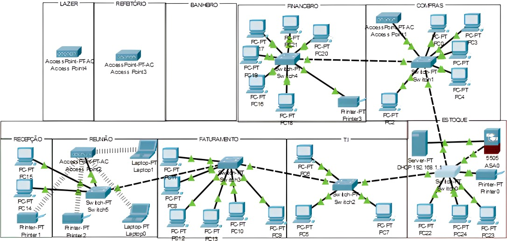

Página Inicial|
Objetivos e Propósito|
Projetos e Trabalhos|;
Habilidades e competências
| Contatos |
PROJETOS
TCC - IOS, Suporte Técnico
Nesse TCC para a conclusão do curso de suporte em ti, a proposta era implementar em uma empresa a qual trabalhava com produção de objetos ecológicos.
Foi realizado a implementação de dispositivos de rede, hardware e softwares que atendessem as necessidades da empresa.
Abaixo o modelo estrutural da rede que foi usado.
